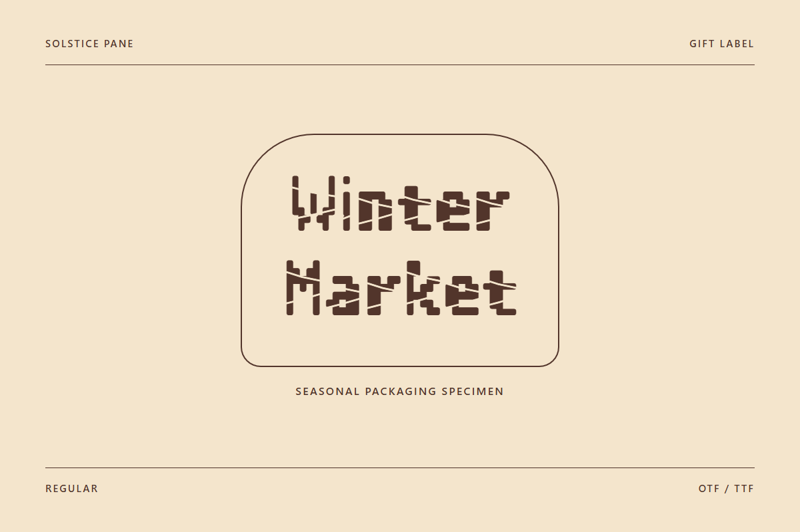
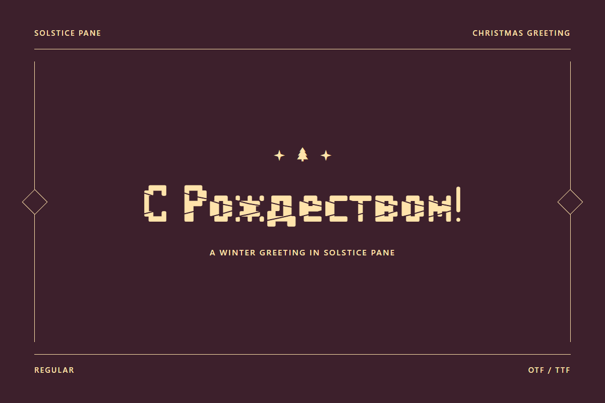
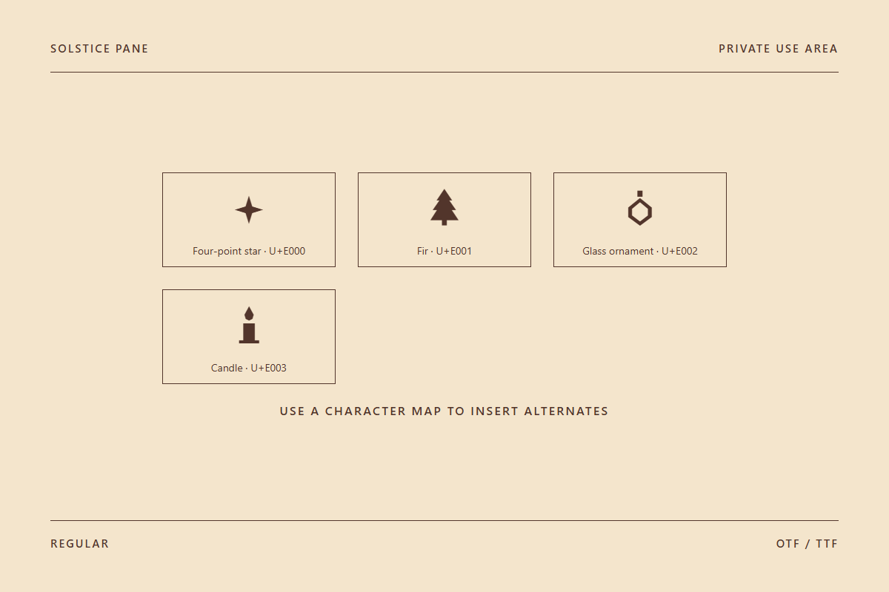
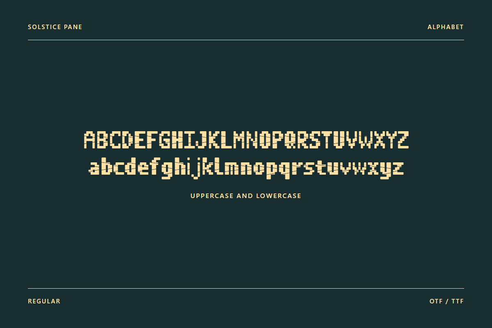
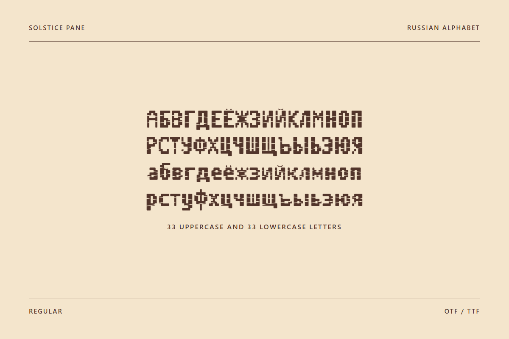
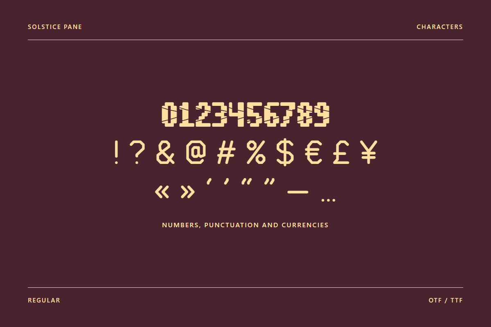
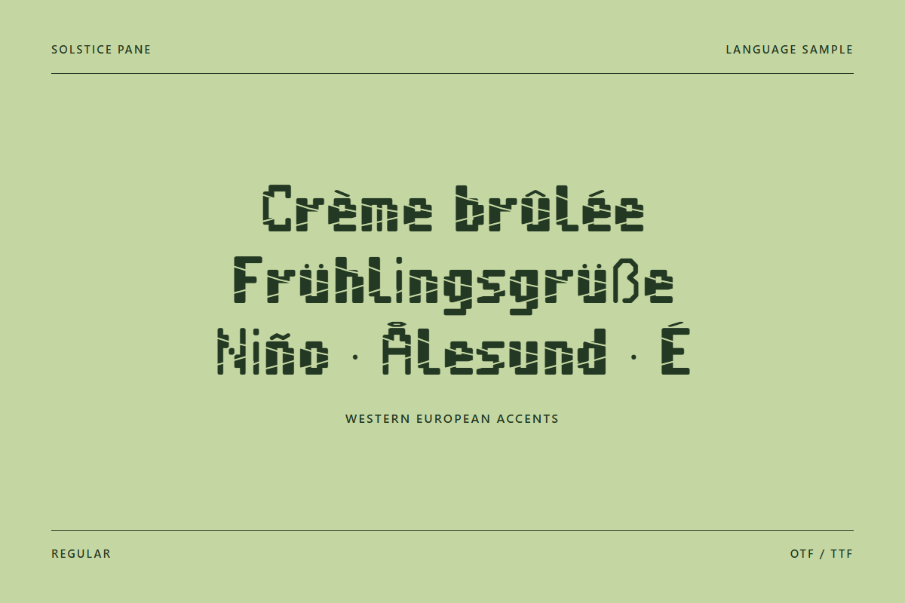
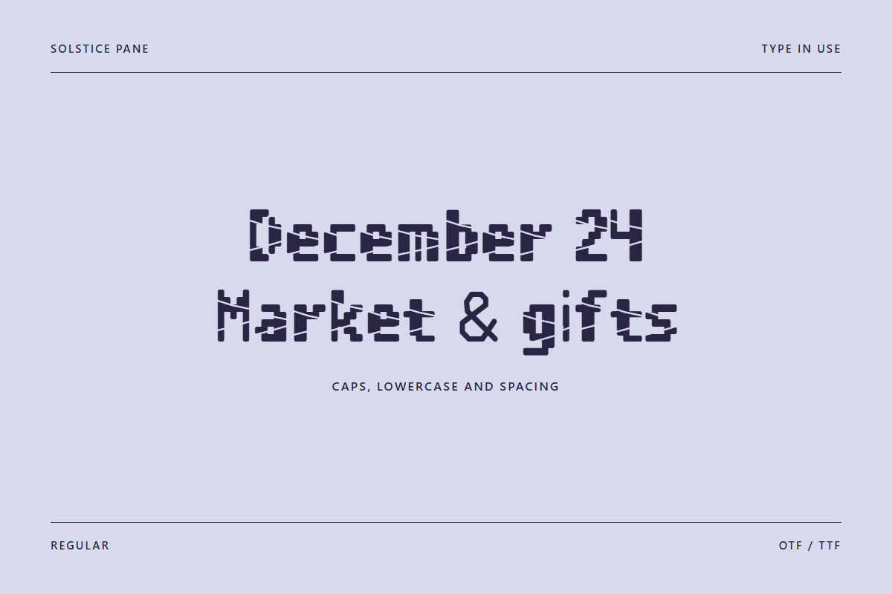

← All typefacesType specimen
Solstice Pane
Strong letter shapes divided by narrow diagonal seams, inspired by stained glass in winter light. Made for market signs, gift labels and seasonal cards. Includes Latin and Russian letters, numerals and four ornaments.








